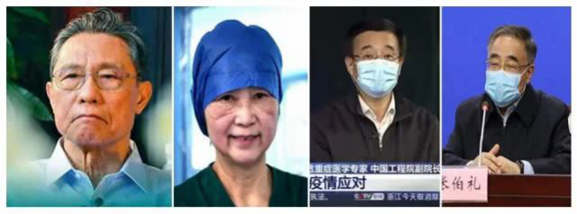

7万例！中国疾控中心发迄今最大新冠病例分析：3019名医护感染，首次描述肺炎发病流行曲线
原文链接 备份链接 2 月 17 日，《中华流行病学杂志》杂志上，中国疾病预防控制中心新型冠状病毒肺炎应急响应机制流行病学组最新发表新冠肺炎研究。 在对截至 2020 年 2 月 11 日中国内地报告的 超过 7 万病例的流行病学特征进行 …
叶青武汉日记：四大院士四大功臣，还有女性
 6606
6606
来源：正和岛
作者：叶青
03-08正在打榜，当前第1

[
砺石商业评论

砺石（北京）管理咨询有限公司 媒体
](https://archive.ph/o/dWrYm/mp.zhisland.com/wmp/user/personal/other/home?uid=6564052753339908099)
推荐人

1、武汉新增确诊病例41例
7日，周六，晴。 7日，全国新增确诊病例44例，新增死亡病例27例（湖北27例），新增疑似病例84例。 截至7日，全国现有确诊病例20533例（其中重症病例5264例），累计治愈出院病例57065例，累计死亡病例3097例，累计报告确诊病例80695例，现有疑似病例458例。 湖北新增确诊病例41例（武汉41例），新增治愈出院病例1543例（武汉1259例），新增死亡病例27例（武汉21例），现有确诊病例19710例（武汉17772例），其中重症病例5140例（武汉4850例）。 累计治愈出院病例45011例（武汉29770例），累计死亡病例2986例（武汉2370例），累计确诊病例67707例（武汉49912例）。 新增疑似病例42例（武汉42例），现有疑似病例295例（武汉258例）。 7日，新增报告境外输入确诊病例3例（北京2例，甘肃1例）。截至3月7日24时，累计报告境外输入确诊病例63例。 截至欧洲中部时间7日10时（北京时间7日17时），中国以外新冠肺炎确诊病例较前一日增加3633例，达到21114例；死亡病例较前一日增加78例，达到413例。 增长的速度非常快。累计确诊病例已经超过中国现有确诊病例了。
2、四大院士四大功臣
3月4日的一篇文章《4位院士的4个正确决定，足可用“力挽狂澜”形容》，让人感动。

以前也陆续了解一些情况，但是这篇文章让我了解了全部情况。——钟南山：肯定的，有人传人现象。2020年1月18日晚，腊月二十四，钟南山挤上G1102次车，在餐车找了一个座位。这一天，武汉不明原因肺炎患者增加到了59例。1月20日下午，他答新华社记者问，提出了对武汉防控的主张，即武汉减少输出，要对火车站、机场等口岸实行严格的检测措施，除非极为重要的事情，外地人一般不要去武汉。1月20日晚上，白岩松在《新闻1+1》节目中首次连线钟南山院士。钟南山院士首次公开发话：“肯定的，有人传人现象。”当钟南山在武汉考察之前，在一些人的意识里还停留在“不存在人传人现象”的争议。——李兰娟：武汉必须封城。1月19日，钟南山赴武汉考察疫情的照片刷了屏。他的身旁有一位女专家的身影，她就是中国工程院院士、浙江大学附属第一医院传染病诊治国家重点实验室主任、感染性疾病诊治协同创新中心主任李兰娟。1月22日，她向国家建议：武汉必须封城！第二天，国家就采取了这一措施。——王辰：建“方舱医院”，应收尽收，应治尽治。2月1日，呼吸与危重症医学专家、中国工程院副院长、中国医学科学院院长王辰院士抵达武汉。王辰认为，破题的关键在于将已经诊断的病例收治到医院中，进行集中收治和隔离。2月2日王辰提议后，2月3日开建“方舱医院”，很快便增加了4000多张床位……——张伯礼：最早提出分“四类”，中西医结合。1月27日晚上开会，张伯礼提出建议，根据病情进行分层分类管理，集中隔离，对隔离人员普遍使用中药。中央指导组采纳了这个意见，果断把‘四类人’分开。”他建议：轻中症患者中药汤剂个体化治疗，重症患者中西医结合治疗。提出中医进方舱，并可由中医承包方舱治疗。中央指导组同意，很快筹建了江夏方舱医院。现在各方舱已经普遍使用中药了。这里还有一个小故事。2月16日，因劳累过度引发胆囊旧疾，中央指导组领导强令他住院治疗。2月18日，为张伯礼手术时发现，他的胆囊已经化脓、胆管结石嵌顿坏疽了。他开玩笑说：“肝胆相照，我这回把胆留这儿了。”武汉人要记住院士们在每一个时点提出的建议。四位巨人，拯救武汉，充分说明了“知识就是力量”。在病毒面前，一般人，包括干部，可能就是小学生。20天来，我每天晚上给企业家讲一个小时，昨天晚上我说：给你们的孩子说一说院士与武汉的故事，读书，有一门绝技，可以保护这个国家。1月25日，我的日记题目是《这是一场战争，而不是拍戏》，提了几个问题：敌人在哪里？谁是最高统帅？我们怎么没有弹药了？我们的战士怎么不足？如何避免巷战？到底听谁的？在与病毒的战斗中，院士就是最高统帅，他们的建议一条一条都被中央指导组采纳。但是，执行不力。因此，今后要强调应对突发事件中如此这般的决策途径：院士建议——指导组决策——武汉执行——执行不力就换帅……7日下午，武汉客厅方舱医院患者清零。它的战功值得一表：2月7日开始收治病人，来自全国的15支医疗支援团队奋战在战疫前线，累计收治患者1760名，高峰时期在舱患者1434人，已治愈患者868人，实现了患者零死亡、医护人员零感染、安全生产零事故、进驻人员零投诉、治愈人员零复发“五个零”， 患者满意度99.44%，打造了生命方舱、安全方舱、和谐方舱，真正成为疫情高峰期开放床位多、收治患者多、运转效率高的“生命之舱”。感谢各省的医护人员，也要感谢卓尔集团和阎志先生的奉献。曾经有网民建议，把汉口北各大市场的空置商铺拿出来用着医治场所，看来还是展览馆、体育馆方便。有了方舱医院，里面的设施也很重要。山东一家名为“JEKEEN街景科技”（街景JEKEEN）的制造企业，其在极短时间内迅速研发出“移动测温消毒通道”、“移动医疗方舱”等疾控设备，成为此番全民“战疫”的得力工具。此后，又推出了“自动测温通道”“测温消毒通道”等移动智能设施。用于国家能源集团、央视大楼和北京地铁等工作、公共场所的出入口，以解决“复工潮”带来的测温、消毒压力。
3、补助献血者
为鼓励和感谢新冠肺炎康复者自愿捐献血浆，弘扬他们的无私奉献精神，黄石市总工会于近日出台《关于慰问捐献血浆的新冠肺炎康复者的暂行办法》，决定对黄石捐献血浆的新冠肺炎康复者给予每人3000元补助。 截至3月5日，已有919位新冠肺炎康复患者为抗击疫情捐献血浆，共计294450毫升。 仅在湖北地区就有450位康复者献出了16万多毫升的血浆。 随着封城时间的延续，很多家庭的经济可能出现困难。 我曾经提过三个建议：当志愿者，拿补贴；提供快餐盒饭；生活性贷款。直接给补贴的建议没有想到。 管党生《建议给武汉市民发生活费》： 武汉乃至湖北人民，这次作出了重大牺牲，为战胜疫情做出了巨大贡献。 现在许多地方已经复工，但武汉依在封城中。 可以想见的是，相当一批人经济已捉襟见肘，又不能出来上班。铁饭碗，上不上班都有工资者毕竟是少数。 经过这么多年的经济腾飞，我国已是世界第二经济强国，应有相当的积累。在这特殊时期，更应让人民享受到改革红利。 郑重建议：给全体武汉市民，包括因各种原因在封城期间滞留武汉人员。从封城到解封之日，发放生活费，具体标准至少每天100元。此政策可考虑推广至湖北全省。 我觉得这个建议值得考虑。香港、澳门，也时常发点补助。 香港从防疫抗疫基金拨出9亿元，把每名学生津贴增加1000元，由2500元增加至3500元，补贴惠及约90万名学生的家长，他们无须另行提交申请。 武汉市民，吃到了全国各地的食品，包括鸭子。 7日，来自成都的200万抗疫物资顺利抵汉，其中的7000只鸭子捐赠给了华汇社区，每户会收到两只鸭子。羡慕。 中南财经政法大学也接受过兄弟财经大学、校友会的援助。 从各地监测的情况看，目前返岗复工的农民工达到7800万，占今年春节返乡的60%。从目前返岗复工的流向看，主要是长三角和珠三角。广东、浙江外省农民工返岗复工率达到70%，江苏外省农民工返岗复工率约60%。 在湖北，在区内回家返工已经有了，异地返工是更重要的问题。7日正式开始。 经过层层审核，首批省内必须返岗人员已通过“鄂汇办”APP、支付宝领取绿码，其中宜昌市安琪集团员工唐先生获得湖北首张“绿码”。“绿码”将作为湖北境内返岗通行证明，全省各地通用、互认。凭此“绿码”，唐先生从五峰返回宜昌城区工作岗位。 现在封小区，一点都没有放松。 我的手机就收到通知：今晚志愿者巡查小组到小区巡视发现15-17栋，有2名居民在楼下遛弯。望各位还是待家不要出门，没事不要出门！拜托！
4、48万亿的“新基建”
截至3月5日，24个省市区公布了未来的项目投资规划，2.2万个项目总投资额达48.6万亿元，其中2020年度计划投资总规模近8万亿元。 此次“新基建”包含7大领域：特高压；新能源汽车充电桩；5G基站建设；大数据中心；5人工智能；工业互联网；城际高速铁路和城际轨道交通。 2008年“四万亿”涉及的“老基建”，主要是铁路、公路、桥梁等“铁公基”领域。 而“新基建”却是有时代烙印的，涉及的是5G、人工智能、数据中心等科技创新领域基础设施，和教育、医疗等民生消费升级领域基础设施。 过去我国基建投资主要是地方政府主导，投资主体单一。“新基建”中相当一部分项目是由市场驱动，或者说是市场与政府合力的结果。民间投资在其中分量会越来越大。 这是今年民营企业的重大机遇。 疫情发生后，价格在1万-3万之间的熔喷布，已涨价至少10倍，有些中间商甚至要价40万元/吨。 因此，扩大口罩的产能，首先要扩大熔喷布的产能。有好消息了。 6日23点59分56秒，北京西郊，中国石化燕山石化厂区，硕大的熔喷头源源不断地喷出白色纤维，瞬间凝结成雪白的布匹。参建各方600多名员工12昼夜连续奋战，中国石化和国机恒天集团合作建设的燕山石化熔喷无纺布生产线一次开车成功，产出合格产品。 截至6日24：00，中央企业熔喷布当日产量达到约26吨。随着新的生产线建成投产，熔喷布未来一周产量将大幅提升。 这个消息，终于让人松了一口气。 浙江嘉兴桐乡一家民企宣布替代熔喷布防疫新材料研发成功。这种可替代熔喷布的覆膜高效滤材具有低阻、高效、易清洁等特点，制作的口罩可反复使用10次。该企业表示，目前产品已通过全面检测并投产。 这也是一个好消息。
5、意大利也封城
7日18时意大利卫生部公布数据，意大利现有新冠病毒患者5061例，死亡233例，治愈589例，意大利累计确诊5883例，较6日18时新增1247例，新增36例死亡病例。 意大利政府已发布紧急封城法令：伦巴第大区将全面封城，同时封城禁令还涉及包括摩德纳，帕尔马，皮亚琴察，雷焦艾米利亚，里米尼，佩萨罗和乌尔比诺，威尼斯，帕多瓦，特雷维索，阿斯蒂和亚历山德里亚在内的11个省，法令将持续到4月3日。 7日，中国红十字会总会派遣志愿专家团队一行7人飞赴巴格达，携带核酸检测试剂盒等医疗用品和设备以及人道救援物资，支援伊拉克新冠肺炎疫情防控工作。上一批5人是去伊朗。 中国学生在线学习，美国也开始了。 位于西雅图的华盛顿大学周五宣布为50000名在校学生开设在线课程。华大因此成为美国第一家因新冠肺炎疫情的发展而转向在线课程的大学。这将持续到3月20日。 7日，中国常驻联合国日内瓦办事处和瑞士其他国际组织代表陈旭会见世界卫生组织总干事谭德塞，通报中国政府决定向世界卫生组织捐款2000万美元，帮助发展中国家提升应对疫情的能力。
6、小结
今天是妇女节，介绍两句我们中国民主促进会老人的话： 孩子们，记住：爱自己的父母才能得到真正的满分——吴若安。
世界上若没有女人，这世界至少要失去十分之五的真、十分之六的善、十分之七的美——冰心。

[
以上文章内容，不代表正和岛平台观点
内容授权、投诉请联系neirong@zhisland.com
 举报内容
举报内容
](#)[](#)

原文链接 备份链接 2 月 17 日，《中华流行病学杂志》杂志上，中国疾病预防控制中心新型冠状病毒肺炎应急响应机制流行病学组最新发表新冠肺炎研究。 在对截至 2020 年 2 月 11 日中国内地报告的 超过 7 万病例的流行病学特征进行 …
原文链接 备份链接 叶青武汉日记：武汉新增病例终于是两位数 6315 来源：正和岛 作者：叶青 03-07正在打榜，当前第2 [ …
原文链接 备份链接 澎湃新闻记者 高宇婷 马作鹏 实习生 李彤 3月6日，武汉的新冠肺炎新增确诊病例自1月27日以来首度降至两位数，距离武汉封城，过去了44天。 根据湖北省卫健委3月7日发布的数据，截至3月6日24时，湖北新增新冠肺炎确诊 …
原文链接 备份链接 叶青武汉日记：真希望3月底能清零 6511 来源：正和岛 作者：叶青 03-06正在打榜，当前第3 [ 智谷趋势 - - …
原文链接 备份链接 叶青武汉日记：中医局与卫健委可以平级吗？ 6259 来源：正和岛 作者：叶青 03-05正在打榜，当前第1 [ 砺石商业评论 砺石（北京） …